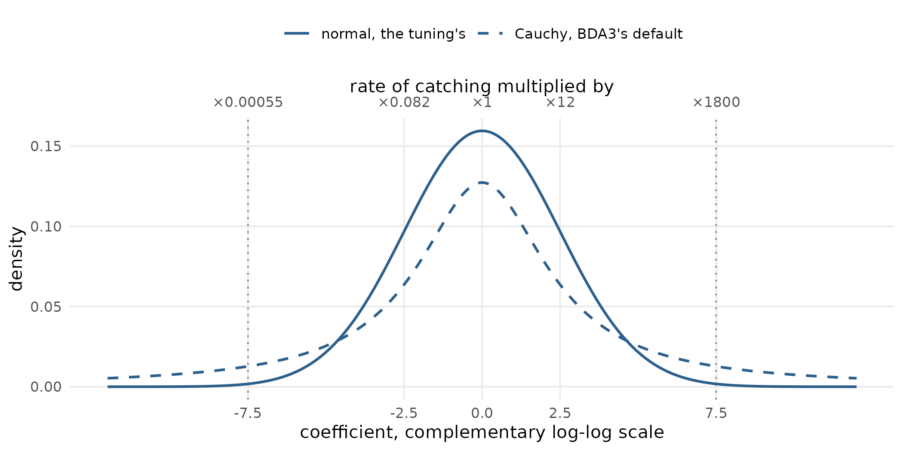
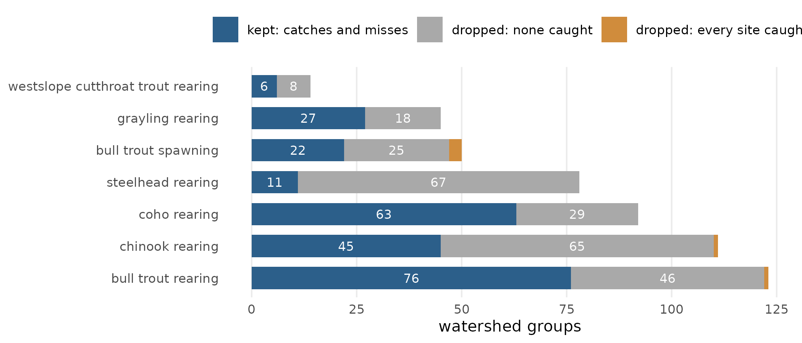
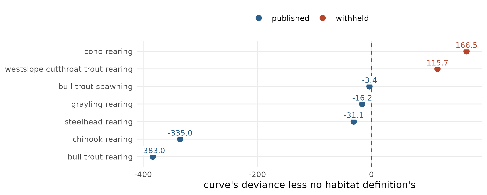
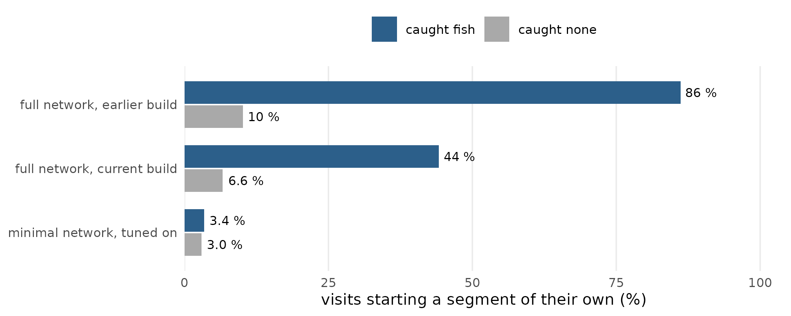

Checking the tuning of fish habitat definitions against Bayesian practice
Source:vignettes/tuning-bayesian-practice.Rmd
tuning-bayesian-practice.RmdThe tuning chooses the thresholds of a fish habitat definition, the few limits on a stream’s size and slope that say where a species spawns or rears, from the Province’s fish sampling records, and grades each stream by how often the species is caught on streams like it. Two textbooks set out how such a choice is made well: Statistical Rethinking (McElreath 2020) and Bayesian Data Analysis (Gelman et al. 2013). This article reads the tuning against them: what it does as they teach, where it departs and why, and what we test next. It is a record of where the method stands and where it is heading; the methodology article sets out its steps.
The answer. The tuning judges habitat definitions
the way Statistical Rethinking teaches: on watershed groups
left out of the fit, telling two apart by the uncertainty of their
difference, and reporting the near-ties beside the one it chooses rather
than a single winner alone. Its three main departures are each
defensible for a habitat definition whose job is to rank streams. The
score measures how well a habitat definition ranks streams within a
watershed group, not how often the species turns up in a new one; the
prior (an assumption about a value made before seeing the data) is used
as a penalty that finds one best value, not a full posterior (the spread
of values the data and prior together allow); and the thresholds are
reported as one choice and a range, not a distribution. Two things
should change: a check on how the choice is made does not fully hold its
test data out, and the two models the publishing test compares treat a
site from an unfamiliar data set or period differently. A third, stream
slopes that depended on where fish were caught, is answered: the habitat
definitions are tuned on link’s minimal network, which does
not cut streams at fish records. The terms are gathered in a glossary at the end.
What does the tuning do?
For each species and life stage, the tuning builds a grid of habitat
definitions around those of link
(Irvine 2026), the
R package that maps habitat on BC’s streams: a floor on stream size, a
ceiling on slope, and for some an exception for small streams near a
large river. Each habitat definition sorts every site crews
electrofished into habitat or not.
The scorer is a regression of whether the species was caught at a site on that sorting. Beside it sit the area fished (the effort) and two sampling terms, the data set the record comes from and its period, which are differences in how crews sampled that a habitat definition must not be credited for. Each watershed group the scorer keeps (the Province divides its streams into these large drainages) also gets its own base rate: how often the species is caught there, other things equal. The score is the scorer’s deviance at sites in watershed groups left out when the habitat definition, effort and sampling terms were fitted, a measure of how badly it predicts the catch, summed over sites; lower is better. (Each left-out group’s base rate is then fitted on its own sites, as the next sections explain.)
The groups are dealt into 5 folds, and each fold in
turn is left out of the fit and scored. Habitat definitions whose scores
lie within one standard error of their difference from the best are
close calls, and among them we choose the one that
changes link’s current habitat definition least, passing
over any whose near-river exception reaches less than 200 m. Then a
second model, the curve, a smooth surface of how often
the species is caught against stream size, distance to a river and
slope, gives every stream the species can reach that has a size and a
slope a grade. The publishing test
publishes those grades only if the curve scores better on the left-out
folds than no habitat definition at all.
The checks, at a glance
Each row is one question the books raise, what the tuning does, and where that leaves it. The sections below take them in turn.
| question | what the tuning does | verdict |
|---|---|---|
| Is the score taken on data the fit did not see? | Whole watershed groups are left out of each fit and scored | follows the books |
| Are two scores told apart by the uncertainty of their difference? | Yes: the standard error of each difference, over watershed groups | follows the books |
| Does the score predict a new watershed group? | No: each left-out group’s base rate is refitted first | departs, defensibly |
| How wide is a close call, and which close call is chosen? | One standard error; the close call nearest link’s current habitat definition, passing over short near-river exceptions | departs |
| Does the check on the choosing hold its test data out? | Not fully: the scores it chooses from were fitted with its test groups in | should change |
| Is the prior a regularising prior at Bayesian Data Analysis’s default scale? | Yes, scale 2.5, but normal not Cauchy, complementary log-log not logit, and on the sampling terms only | follows the books |
| Does the prior give a posterior? | No: it is fitted as a penalty, which finds one best value | departs, defensibly |
| Are thresholds reported as a distribution? | No: as one choice and the range of close calls | departs, defensibly |
| Are watershed groups pooled? | Fixed in the scorer, with groups of one outcome dropped; pooled in the curve | departs |
| Which watershed group does the grade describe? | An average group | follows the books |
| Is the publishing test a fair comparison? | A point comparison against no habitat definition, with no standard error | departs |
| Is an unfamiliar data set or period read the same on both sides of the publishing test? | No: the scorer takes the reference level, the curve the most common one | should change |
| Is the catch rate per square metre the same however much area is fished? | Not necessarily: the area fished has a fitted slope, so the rate per square metre can change with area | departs, defensibly |
| Is a miss an absence? | A miss is read as no catch at that visit | departs |
| Are the inputs measured? | No: placement, slope and flow are estimates read as exact | departs |
| Is a stream’s slope independent of the catch? | Nearly: the tuning reads link’s minimal network, which does not cut streams at fish records | follows the books |
Is the score an honest test?
A model judged on the data it was fitted to always looks better than it is: the honest test is data it has not seen. When the data come in clusters, Statistical Rethinking separates two tests:
“If we wish to validate a model against the specific clusters used to fit the model, that is one thing. But if we instead wish to compute predictions for new clusters, other than the ones observed in the sample, that is quite another.” (McElreath 2020, 426)
The tuning leaves out whole watershed groups, the strict form, so no site in a scored group helped estimate how much the habitat definition, the effort or the sampling terms matter. But before a left-out group is scored, the scorer refits that group’s base rate on that group’s own sites. So the score asks whether the habitat definition puts the catches on the right streams within a group, not how many catches a new group would hold. Every habitat definition gets the same refit, one fitted value per group, so by our reasoning (not measured) each is flattered by about the same amount: the comparison between habitat definitions holds, while the score itself is not a prediction for a new group. That is the right question for a habitat definition that ranks streams, since how common a species is in a watershed is not the habitat definition’s to predict. The score is also taken at one best estimate, where the books average it over the posterior (McElreath 2020, 210; Gelman et al. 2013, 174).
How are two habitat definitions told apart?
Two scores are close or far by the uncertainty of their difference, not of each score alone:
“we don’t use their standard errors but rather the standard error of their difference.” (McElreath 2020, 227)
The tuning takes the standard error (SE) of each habitat definition’s
difference from the best over watershed groups, the units it leaves out,
as the book does over sites (McElreath 2020,
228). Every habitat definition within 1 SE of the best is a
close call, and the published table gives the range of close calls
beside the choice, closer to what the book asks than a single winner
(McElreath 2020,
225). The width of one SE is a convention neither book sets,
and choosing the close call nearest link’s current habitat
definition is a decision the scores do not make.
Choosing among thousands of habitat definitions also flatters the winner’s score. Bayesian Data Analysis warns that when scores like these are used to choose a model, “the predictive performance estimate of the selected model is biased due to the selection process” (Gelman et al. 2013, 182), and names the remedy, a second level of left-out data. The tuning’s check on the choosing (choosing on four folds and scoring the choice on the fifth) was meant to be that, but the scores it chooses from came from fits that included the fifth fold, so its test data were not fully left out. The check reports on the choosing only; it moves no choice and no grade.
What does the prior do?
A regularising prior is sceptical: it slows how fast a model learns from the sample, and keeps an estimate finite where the data alone would let it run away. Where one data set or period caught the species every time, or never, nothing in the data stops its sampling term: the fit pushes it toward infinity, which is called separation. The tuning gives the sampling terms a normal prior with a standard deviation of 2.5 on the scorer’s complementary log-log scale, the scale on which the scorer adds up its terms. On that scale a step of one multiplies the underlying rate of catching by e, about 2.7, so a step of 2.5 multiplies it by about 12.
Bayesian Data Analysis uses the same scale, 2.5, for its default prior on logistic regression coefficients, but a Cauchy prior, on every coefficient but the constant (Gelman et al. 2013, 416). A Cauchy distribution is bell-shaped like the normal, with far heavier tails: it pulls a modest estimate toward zero much as the normal does, but leaves room for a truly large one. Beyond three times the scale from zero lies 0.3 % of the normal and 20 % of the Cauchy. So the tuning’s normal holds a runaway sampling term harder than a Cauchy would; whether a Cauchy would move any score has not been tested. The habitat definition itself carries no prior.

The two priors at scale 2.5: the normal the tuning uses (solid) and the Cauchy that Bayesian Data Analysis uses by default (dashed). The dotted lines mark three scales from zero; the top axis gives what a coefficient at each point multiplies the rate of catching by.
The prior is fitted as a penalty, which finds the single most probable value and no more:
“Ridge regression does not compute a posterior distribution.” (McElreath 2020, 216)
So the tuning carries no uncertainty from the prior into its thresholds, which it reports as one choice and the range of close calls, and no simulation of what the prior implies for the catch has been run (McElreath 2020, 328). The scorer also keeps a fallback, a fit without the prior, for a fold whose usual fit would lose a term; by the way the prior is built the sampling terms cannot send a fold there, but that rests on an argument, not a check.
Are watershed groups pooled?
A model can give each watershed group its own base rate, learned from that group alone, or let the groups share what they have in common, so a group with few sites borrows from the rest. The second, partial pooling, helps most where a group has little data:
“Smaller ponds produce more error, but the partial pooling estimates are better on average, especially in smaller ponds.” (McElreath 2020, 413)
The scorer gives each watershed group its own base rate, which is cheap enough to score thousands of habitat definitions and answers the within-group question above. A habitat definition earns its score inside a group by separating the sites that caught the species from those that did not. A group where no site caught it, or every site did, has nothing to separate: its own base rate explains every site, and runs to zero or to certainty, the separation the prior stops for the sampling terms. Such a group says nothing about which habitat definition is better, so the scorer drops it. Chinook rearing’s sites fall in 111 watershed groups; the scorer keeps the 45 with both catches and misses, and drops 65 where no site caught chinook and 1 where every site did. In every species and stage the groups that caught nothing outnumber those that caught everywhere, and for bull trout spawning, chinook rearing, steelhead rearing and westslope cutthroat trout rearing more than half the groups are dropped.

The watershed groups each species and stage’s sites fall in: kept by the scorer because their sites hold both catches and misses, or dropped because no site caught the species or every site did. Spawning counts spawner evidence rather than a catch.
These are the groups partial pooling would keep, letting a small group where nothing was caught borrow a base rate from the rest instead of running to zero. The curve does pool the groups it is given: it learns a spread of base rates across them. But it is fitted on at most the groups the scorer keeps, and each left-out group is still scored by its own refitted base rate, so the pooled spread is never used to predict a group the curve has not seen. Grades are still drawn for every stream the species can reach that has a size and a slope, in the dropped groups too.
The grade describes an average group, leaving each group’s own base rate out (McElreath 2020, 428), which is the right reading for a map that compares streams across the province. But because every score refits each group’s base rate, no score has tested how well the grade compares a stream in one group with a stream in another.
Is the publishing test a fair comparison?
The publishing test compares the curve’s deviance on the left-out folds with that of no habitat definition, on the same sites and folds. This is the comparison the books teach, and it does not need to charge the curve again for its flexibility, because the curve’s smoothness is already penalised as it is fitted. But it is a point comparison with no standard error, so any improvement publishes, and the curve’s variables come from the choice made on the same folds. It withholds coho rearing and westslope cutthroat trout rearing. Its closest call, bull trout spawning, was published by 3.4 in deviance.

The publishing test for each species and stage: the curve’s deviance on the left-out folds less that of no habitat definition, with the value beside each point. Left of the dashed line at zero the curve predicts better and its grades are published; at zero or right of it they are withheld.
The two sides of the publishing test also differ at one kind of site. Where a left-out site comes from a data set or period the fit never saw, the no-habitat-definition side, which runs through the scorer, gives it the reference level, the prior’s centre; the curve gives it the most common level in the fit. So the two sides treat that site differently.
What else differs?
- Effort is fitted, not fixed. The area fished enters with a fitted slope rather than as a fixed exposure (an offset), so the catch rate per square metre fished can rise or fall with the area fished: the hypothesis Statistical Rethinking describes for a free coefficient on the log of exposure (McElreath 2020, 357). Electrofishing a larger area plausibly catches less per square metre.
- A miss is a miss at that visit. The response is whether a crew caught the species on one visit, so a species present and missed reads as absent (McElreath 2020, 499). The grade says so: it is expected use per standard electrofishing visit, not habitat quality. Telling the two apart needs repeat visits.
- The inputs are carried as exact. A site’s place on the stream, its slope and its modelled flow are each estimates. The tuning drops the worst-placed sites and reads the rest as measured, where the book carries such error into the model (McElreath 2020, 495).
Does a stream’s slope depend on the catch?
A predictor should not be shaped by the outcome it predicts. The
habitat definitions read the slope of the stretch of stream, or segment,
a site sits on, and link’s full network cuts a stream into
segments at, among other places, the highest record of each species it
models on that stream. So there a site that caught fish is more likely
to start a short segment of its own, whose slope is worked out from the
stream just above the catch. link’s earlier build cut at
every record; its current one cuts only at the highest, among other
changes, and there a site with fish starts its own segment less often
than before, but still several times as often as an empty site. So the
tuning reads link’s minimal network, which makes no cut at
fish records, crossings or the ends of stretches whose habitat was
mapped by hand; it still cuts where one Atlas line meets the next, at
natural barriers and at slopes a species cannot pass. There a site with
fish starts its own segment about as often as an empty one.

The share of site visits on the stream branch that start a segment of their own, for visits that caught fish and visits that did not, on link’s full network in its earlier and current builds, and on its minimal network, which the tuning reads.
The network moves the result. Tuned on the full network, chinook
rearing’s steepest slope is 13 % rather than the minimal network’s 9 %,
and it is 9 % again when each segment of the full network reads the
slope of the minimal segment it lies in, which is how link
can draw a habitat definition tuned on the minimal network (link#463).
The network moves the habitat definitions of bull trout rearing, bull
trout spawning and steelhead rearing too. The minimal network leaves out
three kinds of cut at once, so these runs cannot say how much of the
change comes from the cuts at fish records alone (#120).
The article Splitting streams at
fish records shifts the steepest slope mapped as habitat shows this
in full.
What do we test next?
- Three fixes to the tuning (#203): the curve gives a site from an unfamiliar data set or period the reference level, as the scorer does; a run stops if the scorer ever fits a fold without its prior, so that rests on a check; and the check on the choosing is either nested, each fold’s choice made from fits that never saw it, or described as what it is.
- A pooled curve, scored both ways (#186), for chinook and westslope cutthroat trout rearing: a full posterior with priors on the smooths, and the groups with only catches or only misses kept. Today’s curve and the pooled one are each scored both by every left-out group’s own refitted base rate and as a new group drawn from the spread of groups, since a new-group score for one beside an own-base-rate score for the other compares nothing. Two cheap tests ride with it: the area fished as a fixed exposure, and a simulation of what the prior implies for the catch.
-
Slopes measured other ways (#70):
modelled slopes checked against field-measured ones, and slopes over
fixed lengths of stream scored beside
link’s segment slope.
What this review did not test
- It reads the method and fits nothing; how much each change moves a score is measured by the work that makes it.
- Occupancy models, which separate a missed species from an absent one, are named in Statistical Rethinking but not taught there, and penalised splines are named in Bayesian Data Analysis without the smoothing library’s penalty scale, so this review stops at what the books say.
- It describes the code at commit c275e250 and the run whose summaries this article’s data, written on 2026-11-14, read.
Terms
- Base rate. How often the species is caught in one watershed group, other things equal; the scorer fits one per group.
- Cauchy distribution. A bell-shaped distribution with far heavier tails than the normal; as a prior it pulls most estimates toward zero but leaves room for a large one.
- Close calls. Habitat definitions whose scores lie within one standard error of their difference from the best.
- Complementary log-log scale. The scale on which the scorer adds its terms; a step of one multiplies the underlying rate of catching by e, about 2.7.
- Curve. A smooth surface of how often the species is caught against stream size, distance to a river and slope, fitted after the choice; it gives each stream its grade.
- Deviance. How badly a model predicts the catch, summed over sites; lower is better.
- Fold. One of the 5 sets the watershed groups are dealt into; each in turn is left out of the fit and scored.
-
Full network.
link‘s streams cut, beyond the minimal network’s cuts, at fish records, at crossings and at the ends of hand-mapped habitat; the networklinkdraws habitat on. Its current build cuts at each species’ highest record on a stream and at slopes only where a species’ access changes; its earlier build cut at every record and every change of slope class. - Grade. A stream’s expected use per standard electrofishing visit, from the curve.
- Habitat definition. The few limits on a stream’s size and slope that say where a species spawns or rears.
-
Minimal network.
link’s streams without the cuts at fish records, crossings and the ends of hand-mapped habitat; still cut where Atlas lines meet, at natural barriers and at slopes a species cannot pass. - Partial pooling. Letting groups share what they have in common, so a group with little data borrows from the rest; the alternative is a base rate fitted to each group alone.
- Penalty. A prior fitted by finding its single most probable value (also called ridge regression), with no posterior.
- Posterior. The spread of values the data and the prior together allow.
- Prior. An assumption about a value made before seeing the data; a regularising prior keeps estimates modest.
- Publishing test. The check that publishes a species and stage’s grades only if the curve scores better on the left-out folds than no habitat definition.
- Sampling terms. The data set a record comes from and its period: differences in how crews sampled that a habitat definition must not be credited for.
- Score. The scorer’s deviance at sites in left-out watershed groups.
- Scorer. The regression of whether the species was caught on a habitat definition’s sorting, with effort, the sampling terms and each group’s base rate.
- Separation. Where a term or group meets only catches or only misses, so the fit pushes its value toward infinity.
- Standard error of a difference. How uncertain the gap between two scores is, worked out from the gap at each watershed group.
- Watershed group. One of the large drainages the Province divides its streams into.
Software and citation
The tuning runs in the R package knowledge,
on the habitat definitions and streams of link. To cite
this package:
Irvine A (2026). knowledge: Tests Fish Habitat Definitions Against What is Known About Where Fish Live, and Tunes Them from the Fish Records. New Graph Environment Ltd. doi:10.5281/zenodo.23990335 https://doi.org/10.5281/zenodo.23990335. Version 0.4.41, https://newgraphenvironment.github.io/knowledge/.